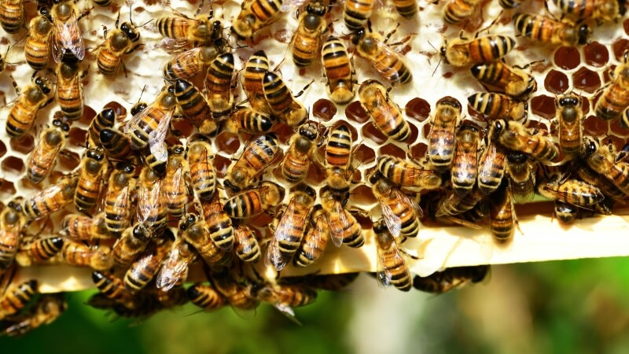
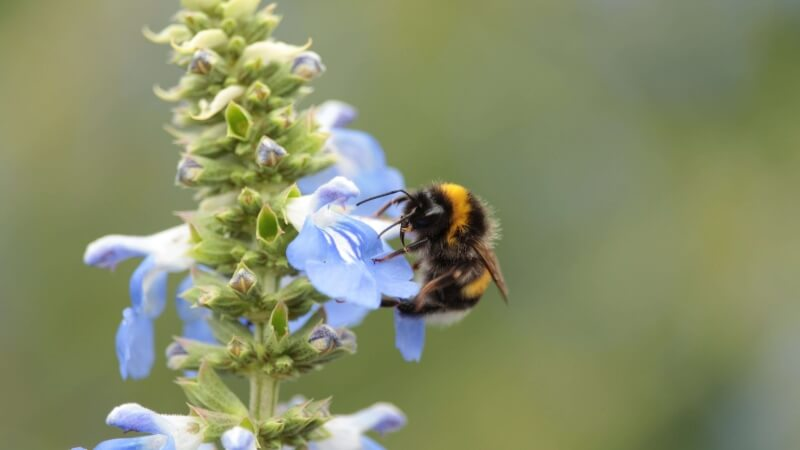
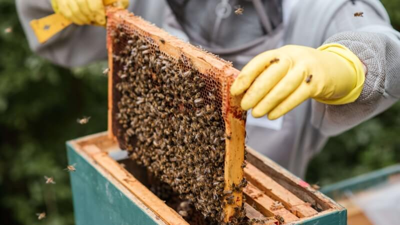
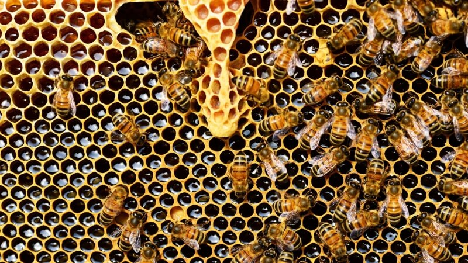
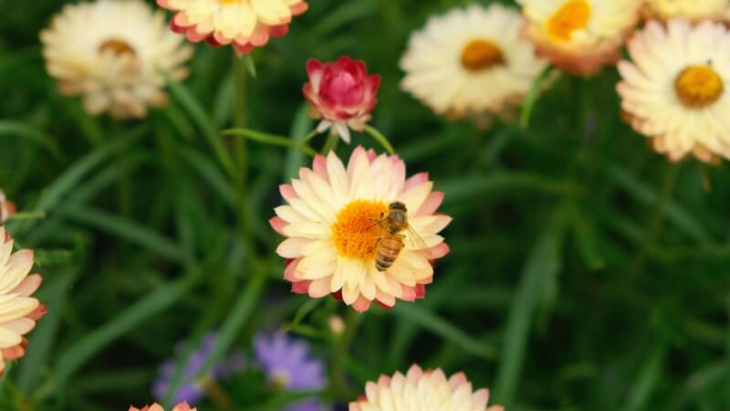
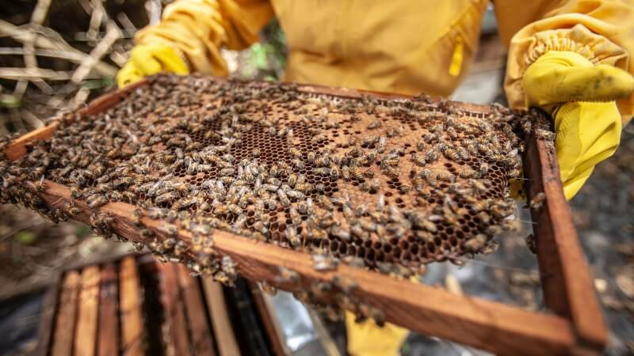
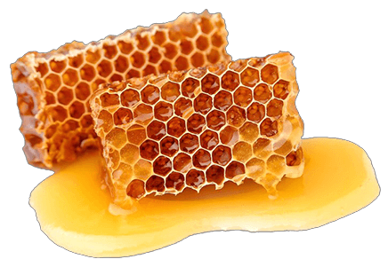

Fresh Organic Honey
Produced on a small farm, our all organic honey is a pure and natural delight that captures the essence of a sustainable approach to beekeeping. We provide bees with a diverse and pesticide-free environment to forage from, resulting in a rich and flavorful honey that reflects the unparalleled biodiversity of the local flora. By cultivating their hives using organic principles, our farmers prioritize the well-being and natural behavior of the bees, ensuring the highest quality of honey. Each jar of this handcrafted organic honey tells the fascinating story of our farm's commitment to environmental stewardship and the rewarding relationship between humans and bees.






The Benefits of Organic Honey
- Serves as a great source of antioxidants
- Rich in vitamins C, D, E and B-complex
- Can encourage and help weight loss
- Rich in health-promoting plant compounds
- Fights against premature aging
- Helps reduce the chance of heart diseases
